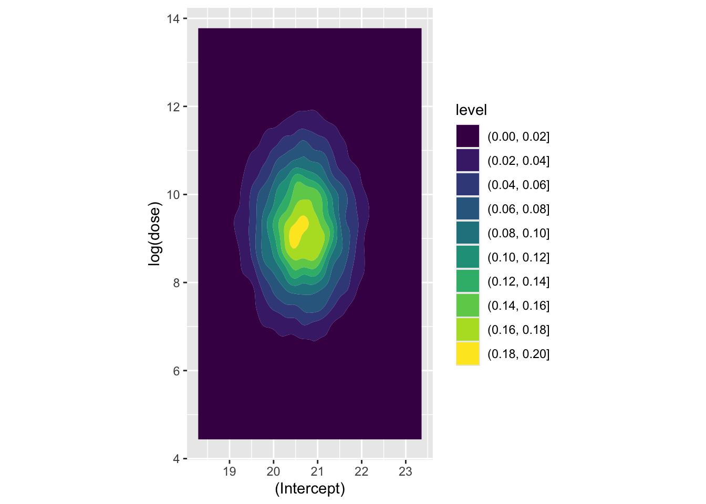
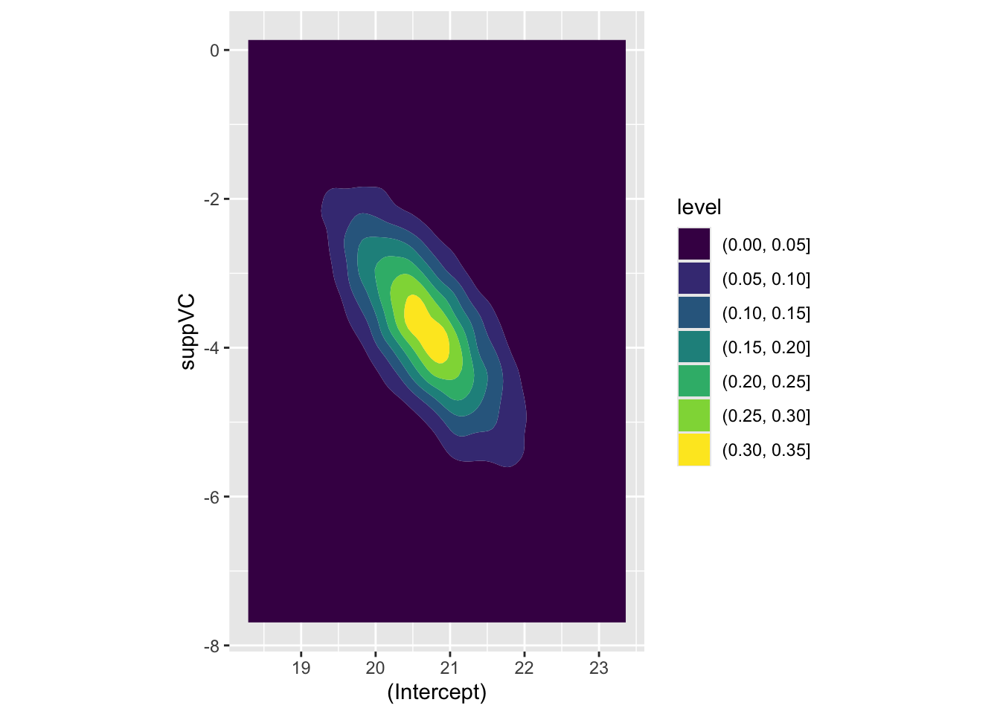

Part Twelve: Honest Predictions the slightly-less easier way
statistics
R
Author
Jon Minton
Published
February 4, 2024
Aim
The last post ended by showing how the predict function can be used to show point estimates and uncertainty intervals for expected values and predicted values for a model based on a toothsome dataset. In this post we will start with that model and look at other information that can be recovered from it, information that will allow the effects of joint parameter uncertainty to be propagated through to prediction.
Recap of core concepts
Back in part 8 we stated that estimates of the cloud of uncertainty in model parameters, that results from having limited numbers of observations in the data, can be represented as:
Where MVN means multivariate normal, and needs the two quantities \(\dot{\theta}\) and \(\Sigma\) as parameters.
Previously we showed how to extract (estimates of) these two quantities from optim(), where the first quantity, \(\dot{\theta}\), was taken from the converged parameter point estimate slot par, and the second quantity, \(\Sigma\), was derived from the hessian slot.
But we don’t need to use optim() directly in order to recover these quantities. Instead we can get them from the standard model objects produced by either lm() or glm(). Let’s check this out…
Building our model
Let’s load the data and model we arrived at previously
best_model <-lm(len ~log(dose) * supp, data = df)summary(best_model)
Call:
lm(formula = len ~ log(dose) * supp, data = df)
Residuals:
Min 1Q Median 3Q Max
-7.5433 -2.4921 -0.5033 2.7117 7.8567
Coefficients:
Estimate Std. Error t value Pr(>|t|)
(Intercept) 20.6633 0.6791 30.425 < 2e-16 ***
log(dose) 9.2549 1.2000 7.712 2.3e-10 ***
suppVC -3.7000 0.9605 -3.852 0.000303 ***
log(dose):suppVC 3.8448 1.6971 2.266 0.027366 *
---
Signif. codes: 0 '***' 0.001 '**' 0.01 '*' 0.05 '.' 0.1 ' ' 1
Residual standard error: 3.72 on 56 degrees of freedom
Multiple R-squared: 0.7755, Adjusted R-squared: 0.7635
F-statistic: 64.5 on 3 and 56 DF, p-value: < 2.2e-16
Let’s now look at some convenience functions, other than just summary, that work with lm() and glm() objects, and recover the quantities required from MVN to represent the uncertainty cloud.
Extracting quantities for modelling uncertainty
Firstly, for the point estimates \(\dot{\theta}\), we can use the coefficients() function
Finally, we can extract the point estimate for stochastic variation in the model, i.e. variation assumed by the model even if parameter uncertainty were minimised, using the sigma function:
Code
sig <-sigma(best_model)sig
[1] 3.719847
We now have three quantities, coef, Sig and sig (note the upper and lower case s in the above). These provide something almost but not exactly equivalent to the contents of par and that derived from hessian when using optim() previously. The section below explains this distinction in more detail.
Back to the weeds (potentially skippable)
Recall the ‘grandmother formulae’, from King, Tomz, and Wittenberg (2000), which the first few posts in this series started with:
Stochastic Component
\[
Y_i \sim f(\theta_i, \alpha)
\]
Systematic Component
\[
\theta_i = g(X_i, \beta)
\]
For standard linear regression this becomes:
Stochastic Component
\[
Y_i \sim Norm(\theta_i, \sigma^2)
\]
Systematic Component
\[
\theta_i =X_i \beta
\]
Our main parameters are \(\theta\), which combined our predictors \(X_i\) and our model parameter estimates \(\beta\). Of these two components we know the data - they are what they are - but are merely estimating our model parameters \(\beta\). So, any estimation uncertainty in this part of the equation results from \(\beta\) alone.
Our ancillary parameter is \(\sigma^2\). This is our estimate of how much fundamental variation there is in how the data (the response variables \(Y\)) is drawn from the stochastic data generating process.
When we used optim() directly, we estimated \(\sigma^2\) along with the other \(\beta\) parameters, via the \(\eta\) parameter eta, defined as \(\sigma^2 = e^{\eta}\) to allow optim() to search over an unbounded real number range. If there are k\(\beta\) parameters, therefore, optim()’s par vector contained k + 1 values, with this last value being the point estimate for the eta parameter. Similarly, the number of rows, columns, and length of diagonal elements in the variance-covariance matrix recoverable through optim’s hessian slot was also k + 1 rather than k, with the last row, last column, and last diagonal element being measures of covariance between \(\eta\) and the \(\beta\) elements, and variance in \(\eta\) itself.
By contrast, the length of coefficients returned by coefficients(best_model) is k, the number of \(\beta\) parameters being estimated, and the dimensions of vcov(best_model) returned are also k by k.
This means there is one fewer piece/type of information about model parameters returned by coefficients(model), vcov(model) and sigma(model) than was potentially recoverable by optim()’s par and hessian parameter slots: namely, uncertainty about the true value of the ancillary parameter \(\sigma^2\). The following table summarises this difference:
Information type
via optim
via lm and glm
Main parameters: point
first k elements of par
coefficients() function
Main parameters: uncertainty
first k rows and columns of hessian
vcov() function
Ancillary parameters: point
k+1th through to last element of par
sigma() function or equivalent for glm()
Ancillary parameters: uncertainty
last columns and rows of hessian (after rows and columns k)
—
So long as capturing uncertainty about the fundamental variability in the stochastic part of the model isn’t critical to our predictions then omission of a measure of uncertainty in the ancillary parameters \(\alpha\) is likely a price worth paying for the additional convenience of being able to use the model objects directly. However we should be aware that, whereas with optim we potentially have both \(\tilde{\beta}\) and \(\tilde{\alpha}\) to represent model uncertainty, when using the three convenience functions coefficients(), vcov() and sigma() we technically ‘only’ have \(\tilde{\beta}\) and \(\dot{\alpha}\) (i.e. point estimates alone for the ancillary parameters).
With the above caveat in mind, let’s now look at using the results of coefficients(), vcov() and sigma() to generate (mostly) honest representations of expected values, predicted values, and first differences
Model predictions
As covered in section two, we can use the mvrnorm function from the MASS package to create \(\tilde{\beta}\), our parameter estimates with uncertainty:
Parameter simulation
Code
beta_tilde <- MASS::mvrnorm(n =10000, mu = coef, Sigma = Sig)head(beta_tilde)
Now let’s look at a couple of coefficients jointly, to see how they’re correlated. Firstly the association between the intercept and the log dosage:
Code
beta_tilde |>as_tibble() |>ggplot(aes(x =`(Intercept)`, y =`log(dose)`)) +geom_density_2d_filled() +coord_equal()

Here the covariance between the two parameters appears very low. Now let’s look at how log dosage and Vitamin C supplement factor are associated:
Code
beta_tilde |>as_tibble() |>ggplot(aes(x =`log(dose)`, y = suppVC)) +geom_density_2d_filled() +coord_equal()
Again, the covariance appears low. Finally, the association between log dose and the interaction term
Code
beta_tilde |>as_tibble() |>ggplot(aes(x =`log(dose)`, y =`log(dose):suppVC`)) +geom_density_2d_filled() +coord_equal()
Here we have a much stronger negative covariance between the two coefficients. Let’s look at the variance-covariance extracted from the model previously to confirm this:
Code
knitr::kable(Sig)
(Intercept)
log(dose)
suppVC
log(dose):suppVC
(Intercept)
0.4612422
0.000000
-0.4612422
0.000000
log(dose)
0.0000000
1.440023
0.0000000
-1.440023
suppVC
-0.4612422
0.000000
0.9224843
0.000000
log(dose):suppVC
0.0000000
-1.440023
0.0000000
2.880045
Here we can see that the covariance between intercept and log dose is effectively zero, as is the covariance between the intercept and the interaction term, and the covariance between the log(dose) and suppVC factor. However, there is a negative covariance between log dose and the interaction term, i.e. what we have plotted above, and also between the intercept and the VC factor. For completeness, let’s look at this last assocation, which we expect to show negative association:
Code
beta_tilde |>as_tibble() |>ggplot(aes(x =`(Intercept)`, y = suppVC)) +geom_density_2d_filled() +coord_equal()

Yes it is! The parameter estimates follow the covariance provided by Sigma, as we would expect.
Expected values
Let’s stay we are initially interested in the expected values for a dosage of 1.25mg, with the OJ (rather than VC) supplement:
Code
# first element is 1 due to interceptpredictor <-c(1, log(1.25), 0, 0) predictions_ev <-apply( beta_tilde, 1, FUN =function(this_beta) predictor %*% this_beta)head(predictions_ev)
So, the 95% interval for the expected value is between 21.31 and 24.14, with a middle (median) estimate of 22.73.1 Let’s check this against estimates from the predict() function:
The expected values using the predict function give a 95% confidence interval of 21.27 to 24.19, with a point estimate of 22.73. These are not identical, as the methods employed are not identical,2 but they are hopefully similar enough to demonstrate they are attempts at getting at the same quantities of interest.
Predicted values
Predicted values also include inherent stochastic variation from the ancillary parameters \(\alpha\), which for linear regression is \(\sigma^2\). We can simply add these only the expected values above to produce predicted values:
Code
n <-length(predictions_ev)shoogliness <-rnorm(n=n, mean =0, sd = sig)predictions_pv <- predictions_ev + shooglinesshead(predictions_pv)
As expected, the interval is now much wider, with a 95% interval from 15.34 to 30.11. The central estimate should in theory, with an infinite number of runs, be the same, however because of random variation it will never be exactly the same to an arbitrary number of decimal places. In this case, the middle estimate is 22.75, not identical to the central estimate from the expected values distribution of 22.72. The number of simulations can always be increased to produce greater precision if needed.
Let’s now compare this with the prediction interval produce by the predict function:
Again, the interval estimates are not exactly the same, but they are very similar.
First differences
It’s in the production of estimates of first differences - this, compared to that, holding all else constant - that the simulation approach shines for producing estimates with credible uncertainty. In our case, let’s say we are interested in asking:
What is the expected effect of using the VC supplement, rather than the OJ supplement, where the dose is 1.25mg?
So, the first difference is from switching from OJ to VC, holding the other factor constant.
We can answer this question by using the same selection of \(\tilde{\beta}\) draws, but passing two different scenarios:
It’s this last distribution which shows our first differences, i.e. our answer, hedged with an appropriate dose of uncertainty, to the specific question shown above. We can get a 95% interval of the first difference as follows:
So, 95% of estimates of the first difference are between -4.85 and -0.81, with the middle of this distribution (on this occasion) being -2.83.
Unlike with the expected values and predicted values, the predict() function does not return first differences with honest uncertainty in this way. What we have above is something new.
Summary
In this post we’ve finally combined all the learning we’ve developed over the 11 previous posts to answer three specific ‘what if?’ questions: one on expected values, one on predicted values, and one on first differences. These are what King, Tomz, and Wittenberg (2000) refer to as quantities of interest, and I hope you agree these are more organic and reasonable types of question to ask of data and statistical models than simply looking at coefficients and p-values and reporting which ones are ‘statistically significant’.
The next post uses the same dataset and model we’ve developed and applied, but shows how it can be implemented using a Bayesian rather than Frequentist modelling approach. In some ways it’s very familar, but in others it introduces a completely new paradigm to how models are fit and run.
References
King, Gary, Michael Tomz, and Jason Wittenberg. 2000. “Making the Most of Statistical Analyses: Improving Interpretation and Presentation.”American Journal of Political Science 44: 341355. http://gking.harvard.edu/files/abs/making-abs.shtml.
Footnotes
These are the values produced the first time I ran the simulation. They are likely to be a little different each time, so may not be identical to the number of decimal places reported when I next render this document. These estimates are approximations.↩︎
Because the simulation approach relies on random numbers, the draws will never be the same unless the same random number seed is using using set.seed(). However with more simulations, using the n parameter from mvrnorm, the distributions of estimates should become ever closer to each other.↩︎
I took this course via the Harvard extension school while doing my PhD in York quite a few years ago. I took it as a non-credit option - as what’s the value of a fraction of a degree when I had two already? - but was told by the tutors that I’d completed it to a ‘Grade A-’ level. So, not perfect, but good enough…↩︎